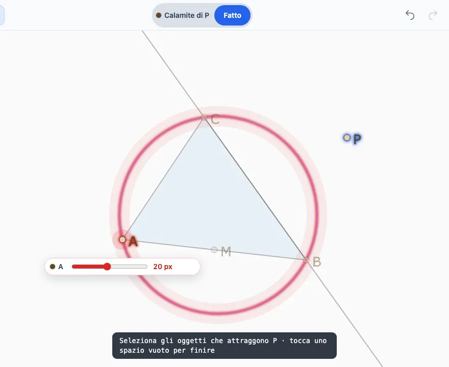

Calamite, puntina e molla
Calamite
Un punto libero calamitato si attacca agli oggetti scelti quando lo si trascina vicino a essi, senza esservi legato.

- Selezionare il punto libero, poi Calamite. Il resto della figura passa sotto un velo.
- Toccare ogni oggetto che attrae (punto, retta, circonferenza, conica, curva, lista): diventa rosso, con un’attrazione iniziale di 20 px. Il punto e i suoi dipendenti sono esclusi.
- Regolare l’attrazione della calamita scelta con lo slider della sua scheda: Nessuna (toglie la calamita), da 1 a 1000 px, Ovunque. La zona di attrazione di ogni calamita è disegnata in rosso chiaro.
- Terminare con un tocco in uno spazio vuoto, Fatto o Esc.
Il punto si può trascinare durante la regolazione per provare. Ogni regolazione è un passo di annullamento.
Puntina
Fissa sullo schermo (punto libero, figura piana): il punto mantiene il suo posto nella finestra, e non le sue coordinate, quando si zooma o si sposta la vista. Resta spostabile. Seconda pressione: rimozione.
Molla
Anima (punto su retta, segmento, semiretta, circonferenza, arco, poligono, conica o luogo) fa uscire sotto il punto una molla che termina con una pallina.
- Tirare la pallina e lasciarla lancia il punto; durante la trazione, un fantasma del punto mostra già il movimento.
- Lunghezza: velocità, a scatti mostrati (px/s su una retta, un poligono o una conica; °/s su una circonferenza; % su un luogo).
- Lato: verso; il punto parte in direzione opposta alla trazione.
- Di traverso rispetto a una retta (più di 45°): avanti e indietro. Altrimenti, il punto gira in tondo.
- Sotto il primo scatto: arresto.
Su un punto già animato, la molla esce tesa alla velocità attuale. Seconda pressione su : la molla viene riposta. Velocità esatta, verso inverso, arresto all’estremità: sezione Animazione delle proprietà, che anima anche gli slider.